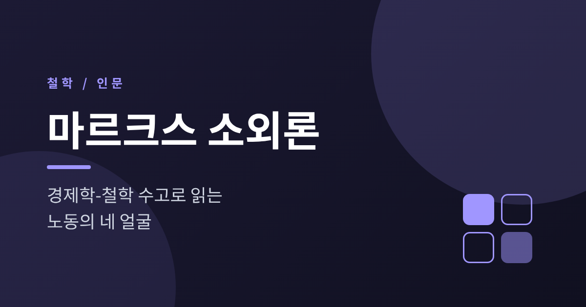
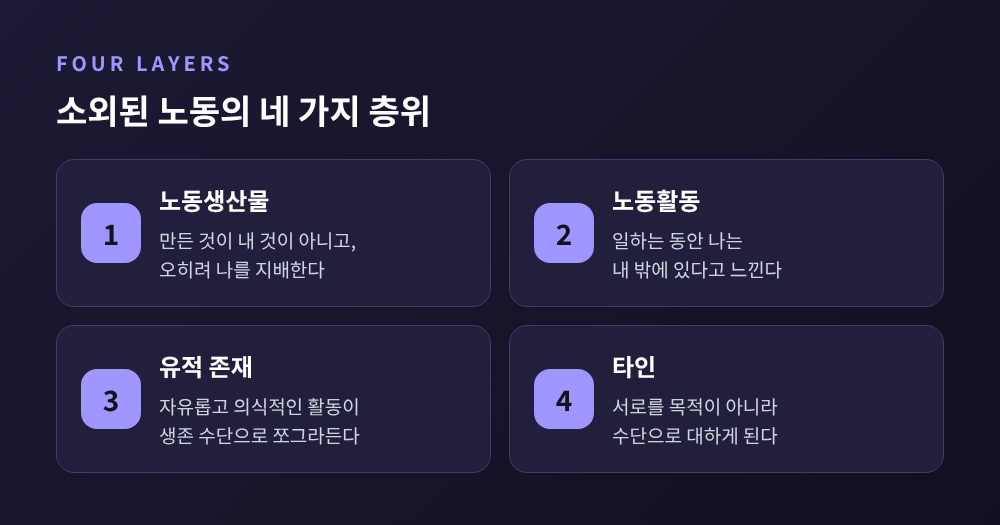
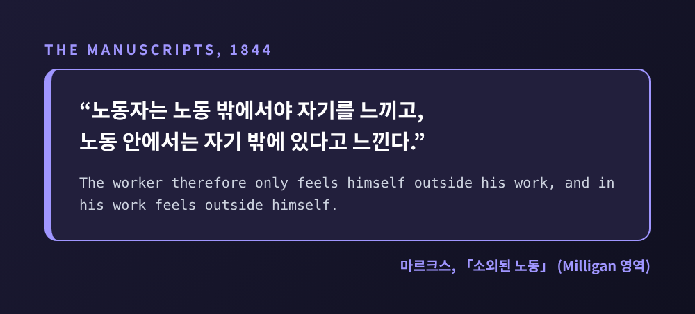
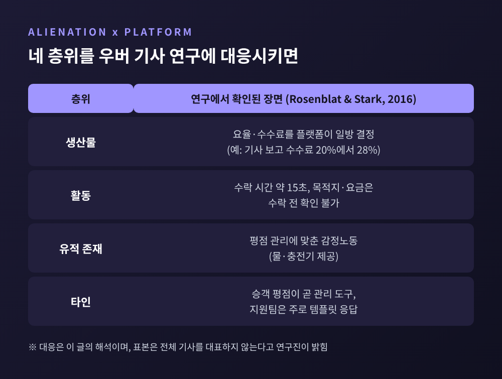
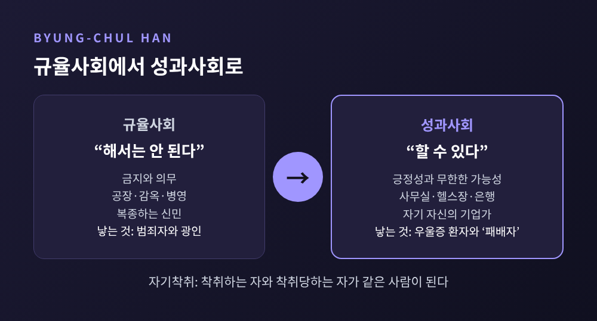

오늘은 청년 마르크스가 『경제학-철학 수고』에서 펼친 소외론을 정리해 보려 합니다. 노동생산물, 노동활동, 유적 존재, 타인이라는 네 가지 층위로 나누어 살펴본 뒤, 플랫폼 노동과 성과주의에 이 개념을 적용할 때 어디까지 말할 수 있고 어디서부터 조심해야 하는지 짚어 보겠습니다. 정치적 주장은 덜어내고, 철학사의 한 장면으로 읽는 것이 목적입니다.
『경제학-철학 수고』는 1844년 4월부터 8월 사이, 파리에서 쓰였습니다. 마르크스는 1843년 10월부터 파리에 머물고 있었고, 나이는 스물다섯, 여섯 무렵이었습니다.
책으로 낸 글은 아닙니다. 초고 상태의 노트였고, 세상에 처음 나온 것은 사후인 1932년입니다. 같은 해에 독일어판이 두 종류 나왔는데, 란트후트-마이어 판은 첫 수고를 빠뜨린 불완전한 판본이었고, 모스크바 마르크스-엥겔스 연구소의 MEGA 판이 처음으로 순서를 바로잡은 학술판이었습니다. 영어판은 1959년에 모스크바에서 나왔습니다.
서문에서 마르크스는 자신의 결론이 정치경제학에 대한 비판적 연구에서 나왔다고 밝히고, 포이어바흐를 "실증적·인본주의적·자연주의적 비판"의 출발점으로 꼽습니다. 소외론의 뼈대는 헤겔과 포이어바흐에게서 빌려온 것입니다. 그 뼈대에 정치경제학의 현실, 곧 임금과 자본과 지대의 세계를 입힌 것이 이 원고입니다.
스탠퍼드 철학 백과는 소외를 "본래 함께 속한 주체와 대상의 문제적 분리"로 풀이합니다. 분리라고 해서 모두 소외는 아닙니다. 기준이 되는 통일이나 조화가 있고, 그것이 깨졌을 때에만 소외라 부릅니다.
그래서 마르크스가 말하는 소외는 월급이 적다거나 근무시간이 길다는 불만과 결이 다릅니다. 임금과 고용 안정은 별개의 문제로 두고, 노동이 인간에게 어떤 의미여야 하는지를 묻는 개념입니다.

첫 번째 층위는 노동생산물입니다. 노동자는 자기가 만든 것을 소유하지도 통제하지도 못하고, 그 생산물이 거꾸로 노동자 위에 군림하는 힘이 됩니다. 마르크스는 이렇게 씁니다. 노동자는 부를 많이 생산할수록 오히려 더 가난해진다고요.
두 번째 층위는 노동활동 자체입니다. 일이 강제되고 심신을 소진시키면, 일하는 시간은 자기 것이 아니게 됩니다. 원문은 이렇습니다. 노동자는 노동 밖에서야 자기를 느끼고, 노동 안에서는 자기 밖에 있다고 느낀다는 것입니다. 더 날카로운 대목도 있습니다. 노동자가 자유롭다고 느끼는 때는 먹고 마시고 잠자는 동물적 기능에서뿐이라는 문장입니다.

이 인용은 일을 하는 모든 사람에게 낯설지 않을 것입니다. 퇴근 후에야 비로소 나로 돌아온다는 감각은 180여 년 전 청년의 노트에 이미 적혀 있었습니다.
세 번째는 유적 존재(Gattungswesen)로부터의 소외입니다. 마르크스는 "인간은 유적 존재"라고 말합니다. 의식적이고 자유로운 생산 활동을 하며, 공동체 속에서 살아가는 것이 인간의 고유한 모습이라는 뜻입니다. 그런데 소외된 노동에서는 "삶 자체가 삶을 위한 수단으로만 나타납니다." 인간다움이 발휘되어야 할 활동이 생존의 수단으로 쪼그라드는 것입니다.
스탠퍼드 철학 백과는 이 층위를 열쇠로 해석합니다. 인간 본성에 대한 암묵적 이해가 있어야 나머지 세 층위가 '문제'로 읽힌다는 것입니다.
네 번째는 타인으로부터의 소외입니다. 앞의 셋에서 귀결되는 결과로, 경제적 관계가 사람들로 하여금 서로를 자기 목적의 수단으로 대하도록 만듭니다. 마르크스에게 자기소외가 실제 모습을 드러내는 곳이 바로 타인과의 관계입니다. 또 하나 눈여겨볼 점이 있습니다. 사적 소유는 소외의 원인이 아니라 결과로 제시됩니다. 마르크스는 사적 소유를 "소외된 인간 생활의 감각적 표현"이라고 부릅니다.
예전에는 공장 관리자가 노동자를 지켜보았습니다. 지금은 알고리즘이 그 자리를 맡기도 합니다. EU 공동연구센터의 2021년 보고서는 알고리즘 관리를 "전통적으로 인간 관리자가 수행하던 조직 기능을 소프트웨어로 자동화하는 것"이라 정의하고, 알고리즘이 노동자를 지시하고 평가하고 징계한다고 설명합니다. 이 보고서는 재량과 기술을 쓸 여지가 줄어들 수 있고, 노동 강도가 올라갈 수 있다는 증거도 함께 전합니다.
구체적인 사례로는 우버 기사 연구가 있습니다. 로젠블랫과 스타크가 2014년 12월부터 9개월간 진행한 연구에 따르면, 기사에게 주어진 수락 시간은 약 15초이고, 수락하기 전에는 목적지도 요금도 볼 수 없습니다. 승객 평점은 사실상 관리 도구여서, 기사들은 최근 500건의 평균이 4.6점 안팎이어야 활동을 이어갈 수 있다고 전했습니다. 평점을 위해 물이나 충전기를 건네는 감정노동도 이어졌습니다.

표처럼 대응시키면 흥미로운 지점이 보입니다. 알고리즘이 정하는 요율과 평점은 활동의 주도권을, 보이지 않는 승객 정보와 템플릿 응답은 타인과의 관계를 건드립니다. 다만 이것은 마르크스의 문장을 오늘에 비추어 본 해석이라는 점을 밝혀 둡니다.
균형을 위해 반대편 자료도 적어 둡니다. 같은 연구에는 우버가 의뢰한 설문에서 응답자의 85퍼센트가 유연성을 운전의 주요 이유로 꼽았다는 수치가 나옵니다. 연구자들은 자유와 유연성이라는 수사가 '부드러운 통제'를 가린다고 해석했습니다만, 유연성을 실제 이점으로 느끼는 노동자가 있다는 사실 또한 지워서는 안 됩니다. 이 연구는 표본이 전체 기사를 대표하지 않는다고 스스로 한계도 밝혔습니다.
플랫폼의 알고리즘이 외부의 감독이라면, 성과주의는 안쪽으로 옮겨온 감독입니다. 한국 출신 독일 철학자 한병철은 『피로사회』(영역 The Burnout Society, 2015)에서 푸코의 규율사회가 성과사회로 넘어왔다고 진단합니다. 금지와 의무의 "해서는 안 된다"가 무한한 "할 수 있다"로 바뀌었다는 것입니다.
그가 보기에 성과 주체는 복종하는 신민이 아니라 자기 자신의 기업가입니다. 외부의 주인이 없는 자유가 강박이 되어, 착취하는 자와 착취당하는 자가 같은 사람이 됩니다. 한병철의 표현으로는 "포식자이자 먹잇감"입니다.

여기서 신중해야 할 점이 있습니다. 한병철의 논지는 푸코와 니체의 계보에서 나온 독자적 진단이지, 마르크스 이론 그 자체가 아닙니다. 두 사람을 잇는 선은 이 글의 해석입니다. 그 선을 따라가 보면, 일의 성과가 곧 자기 가치가 될 때 노동활동의 소외는 '일에서 느끼는 바깥'이 아니라 '나 자신을 도구로 쓰는 안쪽'으로 모습을 바꾸는 듯합니다.
소외론은 오래도록 논쟁의 대상이었습니다. 알튀세르는 1845년 무렵 '인식론적 단절'이 있었고 그 뒤로 소외 같은 철학적 범주는 사라졌다고 주장했습니다. 반대로 터커, 맥렐런, 올먼, 메사로스 같은 인본주의 해석자들은 본질적 연속성을 강조했습니다.
마르첼로 무스토는 양쪽을 모두 경계합니다. 마르크스가 단절을 말한 적이 없고 소외 개념이 『그룬트리세』와 『자본』에도 나타난다고 지적하면서도, 1844년 수고를 완성된 이론으로 떠받드는 것에는 반대합니다. 그가 보기에 이 원고는 "중요하지만 불완전하고 잠정적인 단계"입니다.
유적 존재라는 개념도 비판을 받습니다. 인간에게 고정된 본성이 있다고 전제하는 것이 아니냐는 물음입니다. 라헬 예기(Rahel Jaeggi)는 『소외(Alienation)』에서 소외를 "관계없음의 관계"로 다시 정의하고, 두꺼운 인간 본성론을 거부하는 쪽으로 나아갑니다. 자기 행위와 삶을 자기 것으로 삼지 못하는 상태가 소외이며, 정체성은 세계와 타인에 관여하는 과정에서 만들어진다는 것입니다.
정리하면 이렇습니다. 『경제학-철학 수고』의 소외론은 일을 둘러싼 불만의 목록이 아니라, 노동이 인간에게 무엇이어야 하는가를 묻는 질문입니다. 만든 것, 만드는 일, 인간다움, 타인이라는 네 층위는 오늘의 플랫폼 노동과 성과주의를 읽는 렌즈로도 쓸 만합니다. 그러나 렌즈일 뿐이어서, 해석이 사실을 앞질러서는 안 됩니다.
아직 풀리지 않은 물음도 남아 있습니다. 인간 본성을 어디까지 전제할 수 있는지, 대규모 생산 속에서 비소외 노동이 가능한지는 지금도 논쟁 중입니다.
결국 남는 것은 하나입니다. 소외는 일이 힘든가를 묻기 전에, 그 일이 아직 나의 것인가를 묻습니다.
여러분의 하루에서 일하는 시간은 얼마나 '나의 것'으로 남아 있습니까. 쉽게 답이 나오지 않는 물음이라면, 그 자체로 이 개념을 읽은 보람이 있다고 생각합니다.